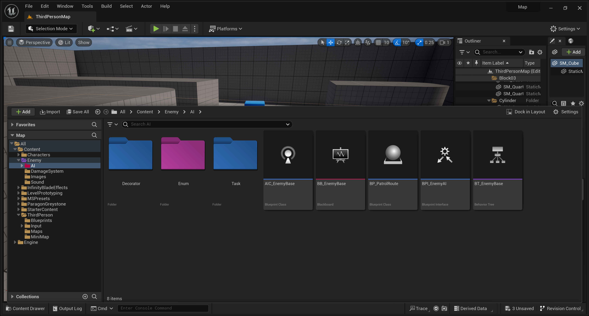
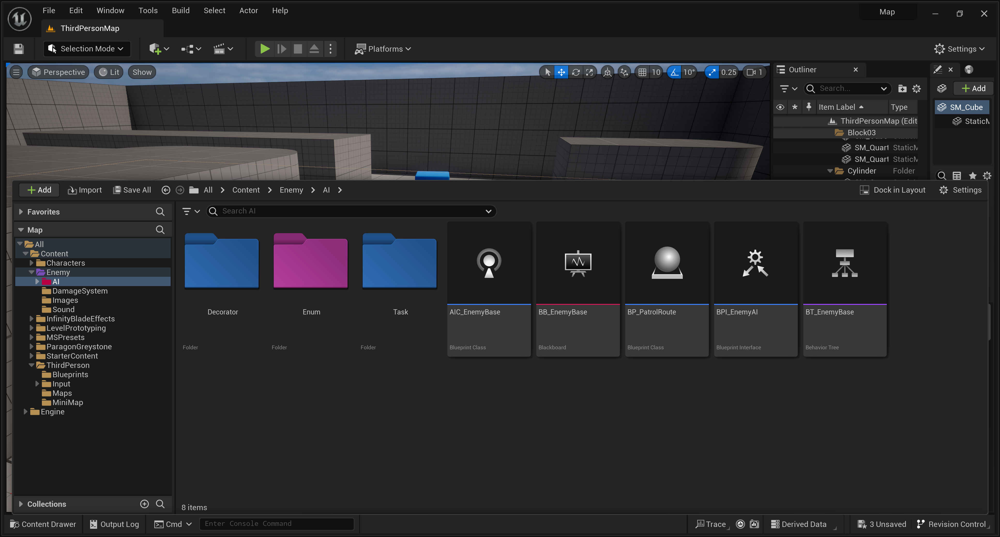
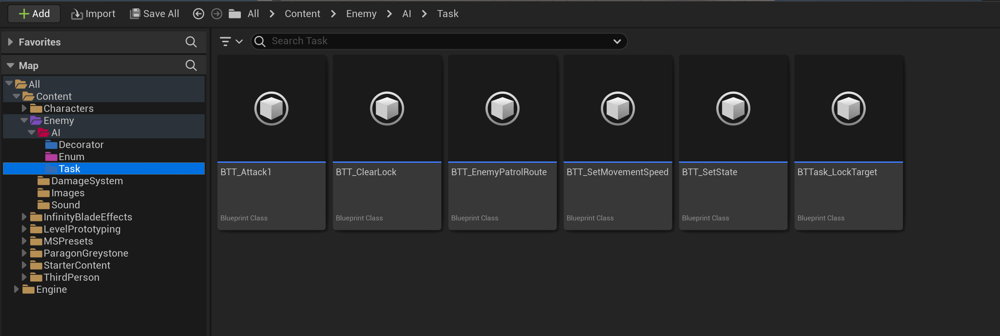

The Paragon-Greystone game features characters and animations specifically designed for demonstrating AI enemy behavior trees. Within the game, enemies possess the ability to detect the player via sight, sound, or damage, prompting a transition from patrolling to either attacking or investigating. The behavior tree has been meticulously crafted for scalability, leveraging Enums and structs to facilitate easy expansion and adaptation.
The main brain of enemy patrol is this behviour tree. This is a base enemy AI behviour tree, so the basic behviour of all the enemy is fixed. Now the other child enemy that can be inhereted will have this feature as well as additional feature for the other enemy. So, if there are new ideas it can be implemented easily by only adding the new feature. This can make the game more intresting.
 

There is interconnection between alot of element to make the AI Enemy patrol. To make the behviour tree work properly and understandable the use of Blueprint interface, structure,enum is done.
AIC enemy base is reponsible to sight,hear and detect the damage on the enemy
